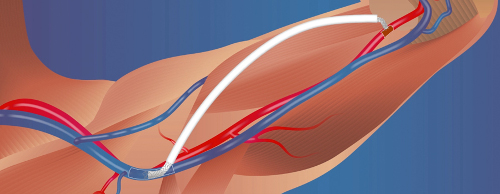

The InterGraft System
The InterGraft system is a minimally invasive procedure for delivering an arteriovenus graft.
The Phraxis InterGraft System connects a standard 6-millimeter arteriovenous graft without sutures. The connectors are delivered via a catheter, and they employ stent-like technology to provide both venous and arterial flow to the graft. Unlike a standard sutured graft, the InterGraft System is designed to provide a smooth, controlled flow.The InterGraft System is a minimally invasive procedure that takes about 30 minutes, and can provide next-day vascular access for hemodialysis.
Caution: Investigational device. Limited by United States law to investigational use.
